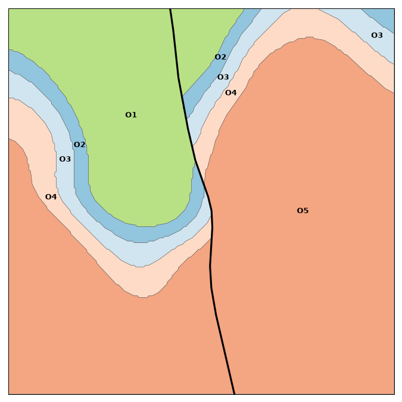

图 1－示例点 11（O5/O4，44°/241°）。棕色：地形等高线；蓝色虚线：层面构造等高线； 红点：同高程交点；红线：预判露头线（F = 0）。
根据露头点的产状（倾角／倾向）与数字高程模型（DEM），按构造等高线原理预判地层边界的露头线， 再由用户编辑后的边界线与断层生成地质图，并进一步建立 3D 地质模型与地质剖面。
| ① 露头点 ＋DEM＋断层 | → | ② 绘制地层边界预判线 （临时图层） | → | ③ 在 QGIS 中 编辑预判线 | → | ④ 生成地质图 （geology 多边形） | → | ⑤ 3D 模型与剖面 （GeoPackage、CAD、3D 查看器） |
两个工具位于菜单 插件 ▸ 地层边界自动追踪、工具栏以及处理工具箱（分组“地质图绘制”）， 因此也可以批量运行或放入图形建模器。
在较短距离内，地层界面可视为一个平面。露头点 P0(x0, y0) 位于地表， 其高程 z0 从 DEM 读取；设倾角为 δ、倾向为 α，则通过该点的地层面为
zs(x, y) = z0 − tan δ · [ (x − x0) sin α + (y − y0) cos α ]
地层面的构造等高线平行于走向，等高距为 h 时水平间距为 h / tan δ。 构造等高线与同高程的地形等高线相交处，就是地层界面在地表出露的位置，将这些交点连接起来即为露头线。
本程序不只在等高线高程上求交点，而是在每个 DEM 像元计算地表与层面的高差
F(x, y) = DEM(x, y) − zs(x, y)
并追踪 F = 0 的连续线，由点位向两侧延伸（使用 GDAL 等值线生成器，在像元间线性插值）。

因此预判线会随地形在沟谷处弯入、山脊处绕出（V 字形法则）：倾角越缓，线形越贴近等高线； 直立地层则为直线。
具有相同上层与下层代号且位于同一断块的点位属于同一条地层边界。程序以反距离加权方式混合各点的层面：
z(x, y) = Σ wi zi(x, y) / Σ wi， wi = 1 / dip
zi 为第 i 点的层面，di 为与该点的距离，p 为“混合权重次方”（默认 4）。 该曲面通过每一个点位，并在点位处保持该点的产状；点位之间产状逐渐变化，因此可以绕过褶皱枢纽或倾伏端。 所得 F = 0 线一次通过所有点位，使同一边界的点位以端点相接。若同一边界仍分成数段（例如 DEM 无数据处）， 自由端点距离小于“同一边界线段端点相接的最大间距”者以直线段相接。
另一种方法“各点位独立（单一层面）”只用各点自身的层面追踪，适合检查单个产状数据。

断层与 DEM 图框将图幅分成若干断块。点位只在同一断块内混合，预判线也只保留在所属断块内， 因此遇到断层即停止，且端点正好落在断层线上。没有完整切穿断块、在图幅内尖灭的断层， 仍会在交会处切断预判线。
程序在每条线的左右两侧检查 F 的正负，并在字段 upper_side 中记录 L 或 R：
从线的起点向终点看，上层位于左侧或右侧。倒转层（overturned = 1）则左右对调。
有了这个字段，生成地质图时无需其他数据即可判定多边形的地层。
编辑时若反转线的方向，请同时对调 L／R；若新增线段，请填写 unit_u、unit_d，
已知时也填写 upper_side。
upper_side 一侧的多边形得 unit_u，
另一侧得 unit_d（按线段长度加权）。与断层重合的线段不计。unit_code 的 bedding）为所在多边形投票，且判定优先。upper_side 的线，由已知一侧推定另一侧
（U/D 边界一侧为 U，另一侧即为 D）。推定不会跨越断层。unit_name, strat_order, series, thick_m, kind 等属性及图例样式从模板图层（如已有 geology）复制；
无模板时，strat_order 由上下层关系排序（1＝最老）。
质量检查：字段 qa 为 ok、conflict（周围边界判定互相矛盾，通常是缺口或交叉）、
propagated（跨线推定）、unassigned（未判定）。第二个输出“未闭合端点”标出没有连接任何线的端点，
请补接后重新运行。
| 图层 | 类型 | 字段（默认名称） |
|---|---|---|
| 地层边界露头点 | 点 | dip 倾角（0–90°）、dip_dir 倾向（0–360°；或按右手定则的走向）、
unit_code_u 上层代号、unit_code_d 下层代号、overturned 倒转（0/1，可选） |
| DEM | 栅格（GDAL 文件） | 以米为单位的投影坐标系；分辨率决定线的精细程度 |
| 断层 | 线 | 字段不限；须延伸到图框或其他断层才能划分断块 |
| 地层代号点位（可选） | 点 | unit_code |
| 模板（可选） | 面 | unit_code, unit_name, strat_order, series, thick_m, kind |
各图层可使用不同坐标系，绘制预判线时转换到 DEM 坐标系，生成地质图时转换到边界线的坐标系。
qa 字段与“未闭合端点”图层，修正线段后可再次运行步骤 4。| 参数 | 说明 |
|---|---|
| 方位字段内容 | 倾向，或走向（右手定则：倾向＝走向＋90°）。 |
| 方法 | “同一边界的点位相接”（默认）或“各点位独立”。 |
| 同一边界线段端点相接的最大间距 | 同一边界的自由端点在此距离（地图单位）内以直线相接；0＝不相接。位于断层或图框上的端点不相接。 |
| 混合权重次方（高级） | 值越大，各点自身的层面在点位周围保持得越远；值越小，曲面越平滑、越接近平均。建议 3–6。 |
| 由点位最大延伸距离（高级） | 限制预判线到点位的距离（0＝整个断块）。 |
| 保留未通过露头点的分支（高级） | 同时保留同一曲面与地表的其他交线（例如沟谷对岸的同一界面）。 |
| 最短线长（高级） | 删除过短的碎线。 |
| 参数 | 说明 |
|---|---|
| 上层／下层代号字段、上层所在侧字段 | 默认 unit_u、unit_d、upper_side（由预判线工具写入）。 |
| 图幅范围 | 地质图的图框；空白时使用线段的范围。 |
| 线段端点接合容许距离 | 端点距其他线段小于此值即接合（地图单位，默认 5）。 |
| 并入邻区的未判定碎片面积上限（高级） | 小于此面积的未判定多边形并入邻区。 |
| 按地层合并多边形 | 每个地层一个（多部件）多边形，与示例 geology 相同。 |
| 图层 | 字段 | 内容 |
|---|---|---|
| 地层边界预判线 | bnd_id | 线编号 |
| unit_u / unit_d | 上层／下层代号 | |
| upper_side | L／R：沿线方向上层所在侧 | |
| block_id | 断块编号 | |
| n_pts | 线通过的露头点数 | |
| pt_ids | 通过点位的编号 | |
| method | blend（混合）／individual（独立） | |
| length_m | 长度 | |
| 地质图 geology | unit_code … kind | 与示例 geology 图层相同的字段结构 |
| qa | ok／conflict／propagated／unassigned | |
| area_m2 | 面积 |
“生成 3D 地质模型与地质剖面”工具把地质图转成 3D 模型，方法与网页版 geomap-workbench 相同，采用隐式位势场法。
series；数字大者位于不整合之上）分组，并按 strat_order（1＝最老）排序。kind = ign 的地层由地质图垂直延伸。volume_m3）。

| 参数 | 说明 |
|---|---|
| 地质图及其字段 | 地层代号、层序、名称、层系、厚度、岩类（sed／ign）。 |
| 断层：倾角／倾向字段 | 断层面产状（空白时默认倾角 60°）。 |
| 产状点位 1、2 | 倾角、倾向（或走向）、所属地层（可选，否则取点位所在的地层）、倒转。 |
| 剖面线 | 每条线生成一个剖面（字段 name，如 A-A'）；空白时自动生成一条垂直走向的剖面。 |
| 剖面垂直夸大倍率 | 剖面图的垂直夸大。 |
| 网格大小／模型深度 | 0＝自动（图幅宽度的 1/40；深度为最低地表以下图幅宽度的 35%）。网格越小越平滑，但文件越大。 |
| 以地层厚度作为界面间距（高级） | 以 thick_m 固定界面间距，而不由界线推求。 |
| 3D CAD 格式 | DXF（polyface mesh，每个地层一个图层）、OBJ + MTL（含颜色）、STL（每个地层一个文件）。 |
| GeoPackage 图层 | 内容 |
|---|---|
| units_3d | 各地层的封闭 3D 实体（MultiPolygonZ 三角网）及体积 |
| horizons_3d／faults_3d／terrain_3d | 地层界面、断层面、按地层着色的地形面 |
| section_fences_3d | 立在剖面线上的 3D 剖面（供 QGIS 3D 地图查看） |
| section_units／section_profile／section_faults／section_frame／section_labels | 地质剖面图，以地图坐标绘于地质图下方（x＝距离、y＝高程×垂直夸大），可直接放入打印布局 |
| section_lines／model_info | 地图上的剖面线；参数、界面场值与警告 |
GeoPackage 旁另有 *.dxf、*.obj + *.mtl、*_unit_*.stl 与 *_viewer.html。
后者是离线 3D 查看器（three.js），可切换各地层、调整透明度与垂直夸大、东西／南北向切割、显示剖面并存为 PNG；
网址后加上 #nopanel 可隐藏面板以便截图。
许可：GNU GPL v2 或更新版本。